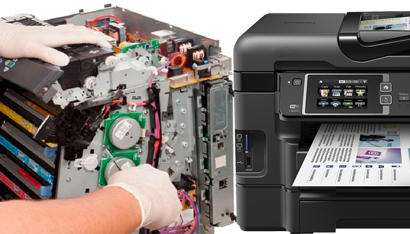

|
Es crucial arreglar nuestra impresora para mantener la productividad y evitar interrupciones en el flujo de trabajo. Una impresora funcional es esencial para imprimir documentos importantes, informes y materiales laborales. Además, la reparación oportuna prolonga la vida útil del equipo, evitando gastos innecesarios en reemplazos. Un mantenimiento regular también contribuye a la calidad de impresión, asegurando documentos nítidos y profesionales. En resumen, la atención a la salud de la impresora es clave para un rendimiento eficiente y resultados de impresión consistentes.
|
¿Cuál sería el impacto en la productividad y funcionamiento diario de una oficina o entorno común si se descuida el mantenimiento y arreglo adecuado de las impresoras?
| 
| La falta de mantenimiento en las impresoras en un entorno común podría llevar a una disminución en la productividad debido a interrupciones en la impresión de documentos esenciales. Además, la calidad de impresión podría deteriorarse, afectando la presentación de información crucial. Un mantenimiento adecuado evita problemas a largo plazo y contribuye a un flujo de trabajo más eficiente, asegurando impresiones de alta calidad y operaciones sin contratiempos. En resumen, la atención a las impresoras es vital para garantizar un entorno de trabajo fluido y productivo.
|